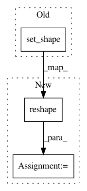

567b87b1b8e69970c676d2c120cf9ecaa481dc19,models/official/detection/dataloader/classification_parser.py,Parser,_parse_train_data,#Parser#Any#,89
Before Change
// Resizes image.
image = tf.image.resize_images(
cropped_image, self._output_size, method=tf.image.ResizeMethod.BILINEAR)
image.set_shape([self._output_size[0], self._output_size[1], 3])
// If bfloat16 is used, casts input image to tf.bfloat16.
if self._use_bfloat16:
image = tf.cast(image, dtype=tf.bfloat16)
After Change
if self._aug_rand_hflip:
image = tf.image.random_flip_left_right(image)
image = tf.reshape(image, [self._output_size[0], self._output_size[1], 3])
// If bfloat16 is used, casts input image to tf.bfloat16.
if self._use_bfloat16:
image = tf.cast(image, dtype=tf.bfloat16)
In pattern: SUPERPATTERN
Frequency: 3
Non-data size: 3
Instances
Project Name: tensorflow/tpu
Commit Name: 567b87b1b8e69970c676d2c120cf9ecaa481dc19
Time: 2020-04-23
Author: pengchong@google.com
File Name: models/official/detection/dataloader/classification_parser.py
Class Name: Parser
Method Name: _parse_train_data
Project Name: p2irc/deepplantphenomics
Commit Name: 9ad7c9d68eb3c3af5afd3126823ba2ab85e9c702
Time: 2019-08-28
Author: jis860@discus-desk09.usask.ca
File Name: deepplantphenomics/countception_object_counter_model.py
Class Name: CountCeptionModel
Method Name: _parse_images
Project Name: NifTK/NiftyNet
Commit Name: 651f0ca63fc948c5b76a2ecfd9ee6bdfe60b0636
Time: 2017-08-21
Author: wenqi.li@ucl.ac.uk
File Name: niftynet/application/autoencoder_application.py
Class Name: AutoencoderApplication
Method Name: connect_data_and_network